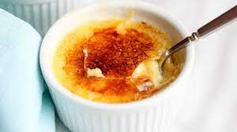

Description
Creme Brulee is a wonderful dessert. It is very easy to make, yet has a huge wow factor due to the french name and use of a kitchen torch.
Pair Creme Brulee with some fresh seasonal berries or fruit and a your favorite dry sparkling wine.
Ingredients:
- 1 Whole Vanilla Bean
- 1 Qt Heavy Cream
- 1 Cup Sugar, Divided
- 6 Large Egg Yolks
Steps:
- Preheat oven to 325 Degrees F
- Split and scrape vanilla bean pod save all parts
- Place cream and all parts of vanilla bean in a medium sauce pan set of high heat and bring to a boil. Remove from heat, cover and let sit for 15 minutes.
- In a medium bowl, whisk together 1/2 cup sugar and the egg yolks until well blended and it just starts to lighten in color. Add the cream a little at a time, stirring continually. Pour the liquid into 6 (7 to 8-ounce) ramekins. Place the ramekins into a large cake pan or roasting pan. Pour enough hot water into the pan to come halfway up the sides of the ramekins. Bake just until the creme brulee is set, but still trembling in the center, approximately 40 to 45 minutes.
- Remove the ramekins from the roasting pan and refrigerate for at least 2 hours and up to 3 days. Remove the creme brulee from the refrigerator for at least 30 minutes prior to browning the sugar on top. Divide the remaining 1/2 cup vanilla sugar equally among the 6 dishes and spread evenly on top. Using a torch, melt the sugar and form a crispy top. Allow the creme brulee to sit for at least 5 minutes before serving.
Propane torches are highly flammable and should be kept away from heat, open flame and prolonged exposure to sunlight. Use only in a well ventilated area and follow all manufacturer instructions.
Return to top
Return to Main Page